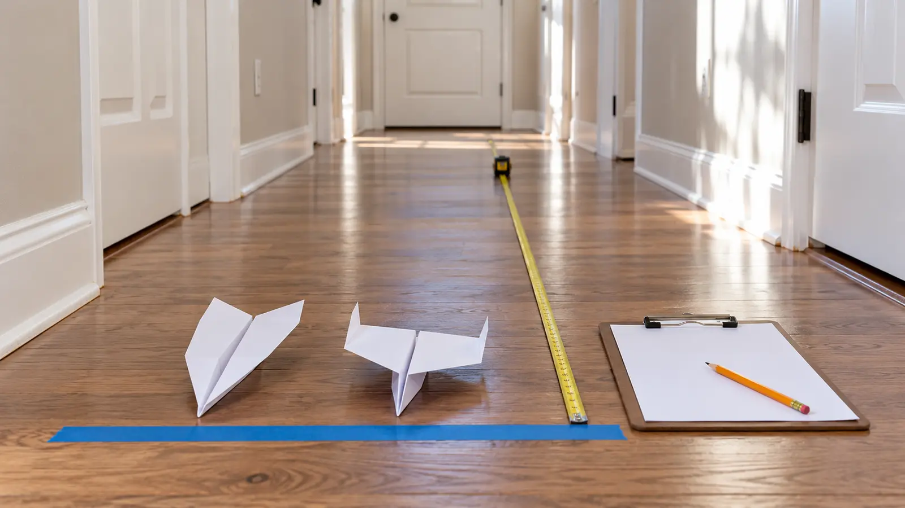

0–4 minutes
Clear a straight indoor lane. Mark a start line with removable tape and choose one landing-point rule.
AT HOME · 25 MINUTES · NO-SPEND · AGES 7+
Do not hold a tournament and call it science. Use the same thrower, the same start line, three launches per design and one controlled change so the family can learn from the weird throw instead of arguing about it.

Fold two planes from the same paper, change one visible feature, have one thrower launch each plane three times from the same line, measure where the nose first touches the floor and compare the middle result. The point is not which child wins. The point is whether the evidence is repeatable enough to support a claim.
Do not buy a kit. Do not add paper clips for nose weight. The National Air and Space Museum has a separate paper-clip experiment for ages nine and up, but this family version removes the small metal part and changes only folded paper.
Use the same sheet size and paper type. Make the same basic dart or glider fold for both planes. On Plane A, leave the rear edges flat. On Plane B, fold up two small, matching rear tabs. Creases will never be laboratory-identical, which is why the conclusion should stay modest.
If the adult and child cannot reproduce the same base fold, use one plane for six throws: three before the tab change, then three after. Mark the plane A/B on the results sheet, not on the airplane if ink weight or wetness could become another variable.
Measure from the start line to the point where the airplane’s nose first touches the floor. Do not measure where it slides to rest. If the plane hits a wall, person, pet or furniture, record “blocked” and clear the lane before repeating. If it leaves the lane, record the distance to first floor contact and add “off-line.”
One thrower should launch all six trials. Use the same foot position, approximate hand height and gentle level push. Perfect consistency is impossible; repeated trials show how much that matters.
With three distances, sort them from shortest to longest and choose the middle one. That is the median. It prevents one crash or lucky glide from owning the whole story. Also keep the shortest and longest result visible: a design with a long median but huge spread may be farther and less predictable.
Use this table:
| Plane | Throw 1 | Throw 2 | Throw 3 | Middle | Spread note |
|---|---|---|---|---|---|
| A · flat tabs | __ | __ | __ | __ | straight / turned / stalled |
| B · raised tabs | __ | __ | __ | __ | straight / turned / stalled |
NASA explains flight through lift, weight, thrust and drag. A hand-launched paper model is affected by all four, plus fold symmetry and the throw. Your six launches do not prove a universal “best plane.” They show what happened in one lane, with one thrower, two handmade models and one small change.
A useful conclusion sounds like: “In our hallway, Plane B had the longer middle distance, but it also turned more.” An honest inconclusive result sounds like: “The distances overlapped and our folds were uneven, so we need a cleaner repeat.” Both are better than choosing the farthest single throw.
No second design, no measuring unit and no winner. For another controlled build, use the paper-bridge load test. For a moving-parts build, use the cardboard tilt maze. For a light experiment, use the flashlight shadow lab.
No hallway: use a cleared room and test accuracy through a wide paper goal instead of distance. Apartment noise: paper planes are quiet; keep running feet and door slams out of the method. Outdoor option: only a calm, legal open space away from roads, power lines, water, wildlife and other visitors; wind becomes a variable. Cleanup: unfold and recycle clean paper where local rules allow, or save the models for a repeat.
Skip when throwing is unsafe in the available space, folding creates frustration, or measuring on the floor creates a mobility barrier. Adapt with pre-folded planes, seated launching, a target box, verbal predictions or an adult measuring. Children who mouth paper or small objects need direct supervision and an activity matched to their needs.
MAKE THE WEEK COUNT
Build the plan your family can finish well, then leave enough energy for the next part of the day.
More family plans